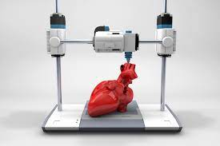
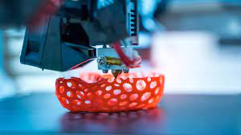

Creating a new world of widespread sustainable lifestyles is a tall order in itself, however, it can be effective to begin with community level solutions such as community gardening initiatives. My future system, Sustainable Living Pods, expands on the sustainability of community gardening by creating reusable 3D printed planters. 3d printing is a sustainable choice as it is generally low cost and accesible, produces less waste than other manufacturing processes, and can utilize recycled material for the printing process.
 